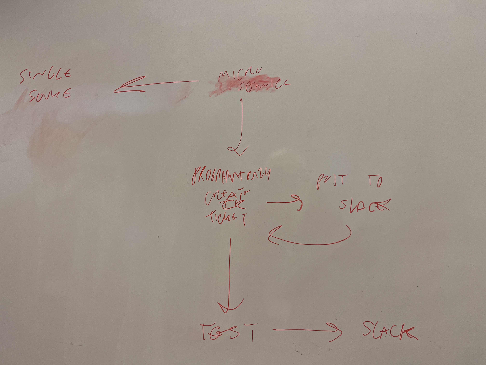
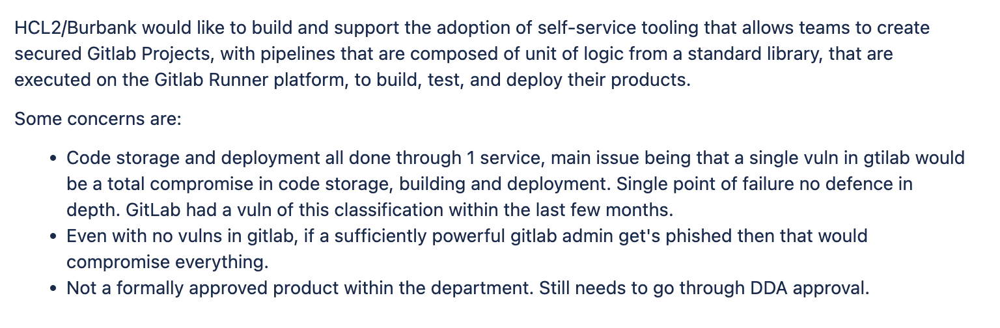
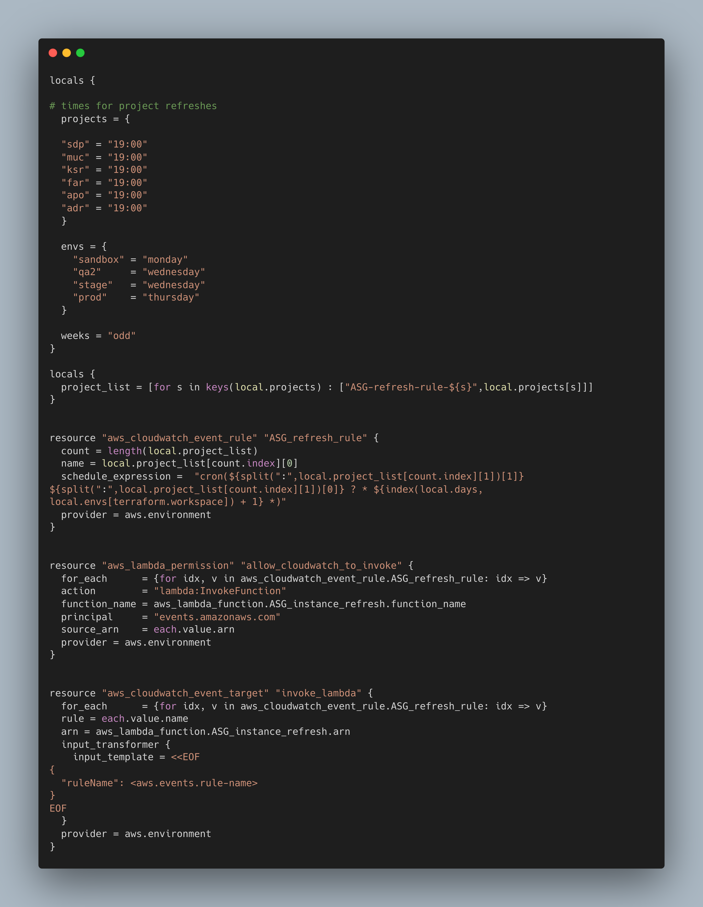

Introduction
Date: 12 Dec 22
When a new Amazon Machine Image (AMI) is generated we need to update all of our instances with this new AMI. This can be quite a time consuming job so it was decided in a team day towards the end of the year that we would find a way to automate it. The first ticket for this work was to design and implement a process for refreshing auto-scaling groups in AWS.
How did we get the ticket?
After a brainstorming/whiteboarding session discussing what we wanted out of this piece of work, it was decided that the work would be carried about by me, another apprentice and a fast streamer.
During the whiteboarding session, we each had a whiteboard to display our ideas of what the solution would be. As this was a perliminary session, members of the team focused on different aspects of what would be necessary to achieve the desired result. As I had recently undertaken a lot of the work we had sought to automate, several concerns were fresh in my mind. The aspect of the solution that seemed to me to require a bit of thought is communicating the changes with other teams. Whenever a refresh occurs we must ensure that the teams responsible for the applications that run on our instances were aware of what changes were occuring and when. So, in my diagram I made a rough sketch detailing an idea about raising tickets, testing and notifying teams programmitacally. In the brainstorming session after the whiteboarding session we discussed further whether raising the tickets would be necessary or whether this would be made superfluous by having a defined process that would be run out regularly. But the need to communicate the changes as they occured as well as testing posting to slack (where we traditioonally posted information when running out the changes manually) was kept. S21

Our way of working
The work was coordinated through a mix of meetings slack channels, group calls and messages. We paired and shared information between each other to form an effective team and complete the work using our collective skills.
There are a range of pair programming techniques we could have availed ourselves to when completing this work. Unstructured pairing,Driver-Nativator, Backseat Navigator and Mobbing. Ultimately we decided no single approach but chose the style of pairing that seemed most approriate for the task. Since we divided the responsibilities of different aspects of the work we were each an expert in some areas and a novice in others, with some overlaps. To give an example, when the other apprentice on the team was having a problem with a lambda that posted updates to slack, we used a strong style pairing because I had more experience writing in python. He had a problem keeping track with variables which meant the logic of his lambda didn’t do what he intended. I suggested the use of python dictionaries and walked him through how that would work on his lambda. This pairing technique should be used sparingly because it leads to incomplete understanding on the part of the driver, but given the simple circumstances it was appropriate to use so my team mate could become unblocked and do some reading later on dictionaries to solidify his understanding. K20 S13 S4
We would also peer review each others work before merging changes to the main branch. This is an important step to take so we can ensure quality of work and also facilitate knowledge sharing within the team. B1
The work
We initially considered using Gitlab pipelines but the security team had not had chance to fully review Gitlab CI/CD as a solution so we had to consider other possibilities. The security team is charged with ensuring all the software/technologies we use meet acceptable standards so they must approve all new technologies before we can use them. This constrains our delivery because we often may find tools that can facilitate or increase our team efficiency but we have to wait for approval before moving forward. On the other hand, this also helps us because this allows us to know that the technologies that we are currently using are safe to use as long as we work within the confines what aspects of said technology that they have approved. K9

I wrote some terraform to set up the necessary infrastructure for our lambda solution, below is the page where you could change variables to allow configuration of the times that the lambda ran by service and by environment. 
Conclusion
Ultimately, this will be part of an ongoing sequence of work to further automise other neccessary updates but I am happy with the start we have made putting into place a process to go forward.